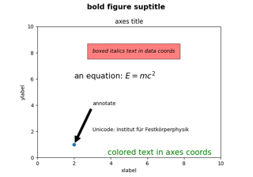

Text#
Matplotlib has extensive text support, including support for mathematical expressions, TrueType support for raster and vector outputs, newline separated text with arbitrary rotations, and Unicode support. These tutorials cover the basics of working with text in Matplotlib.
For even more information see the examples page.

Text in Matplotlib


Text rendering with XeLaTeX/LuaLaTeX via the pgf backend
Text rendering with XeLaTeX/LuaLaTeX via the pgf backend